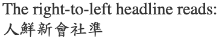
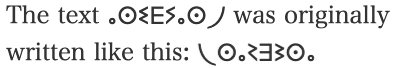
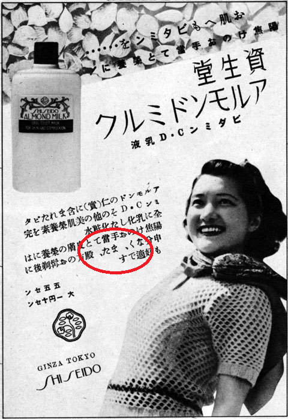
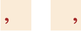

In addition to the usual candidates (Arabic, Hebrew, N'Ko, Syriac, Thaana, etc.) a number of other writing systems that are nowadays written left-to-right were once written in a right-to-left direction. These writing systems include Chinese, Japanese, Egyptian hieroglyphs, Tifinagh, Old Norse runes, and a good number of other now archaic scripts.
The first Japanese commemorative stamp, marking the Emperor's 25th wedding anniversary in 1894. The banner across the top is written right-to-left.
Since the Unicode Standard applies strong LTR directionality to the characters in these scripts, it's not possible to simply apply the Unicode Bidirectional Algorithm to display them correctly. Furthermore, some of these scripts mirror-image the shapes of the character glyphs when they run right-to-left.
This article suggests ways to produce runs of right-to-left text for these languages using HTML & CSS.
Use cases
Use cases are very few. You may very rarely come across modern Taiwanese or Tuareg text that writes right-to-left, but mostly the use cases come down to reproducing archaic usage of scripts.
Archaic scripts, such as Ancient Egyptian hieroglyphs, are generally written in modern expository text from left-to-right. However, the original incriptions or written sources often ran right-to-left. In the case of Egyptian, the direction of hieroglyphs on monuments was determined by the overall aesthetic scheme. Alongside a picture of a person, you would read horizontal sequences of hieroglyphs towards the face of that person. Not only that, but the character glyphs would be mirrored, so that you would read towards the face or beginning of any character glyphs too.
Thus the sequence that modern egyptologists might write as
would be ordered from right-to-left in the original and the glyphs would be mirrored.
Detail of a limestone carving in Egypt (BM EA 585).
Although you would rarely need to, we'll look here at how you could make the text look like the original if you wanted to.
In the case of Chinese and Japanese, most of the modern text fragments you will come across are short, and are often designed to represent archaic writing, such as in the evocation of Old Japan for tourists.
For Japanese, an interesting article from the sci.lang.japan site explains that, until the Meiji period, text was normally vertical except where there were spatial constraints. The adoption in the late 1800s of horizontal writing as a serious alternative to vertical led to initial experimentation with inline character direction.
At the very beginning of the change to yokogaki [horizontal writing], in the Meiji period (1868-1912), there was a short-lived form called migi yokogaki (右横書き), "right yokogaki", in contrast to hidari yokogaki (左横書き), "left yokogaki", the current form. This resembled the right-to-left horizontal writing style of languages such as Arabic or Hebrew with line breaks on the left hand side of the page. ... This form was never widely used, and has not survived.
The following picture is from a Taiwanese newspaper dating from around the year 2000. This is very rare now. Notice that the horizontal title text in the middle-right runs right-to-left – ie. in the same direction as the vertical lines flow below the title – but that it also includes the text "8.6%", which is written left-to-right. Notice also that the text in the caption under the picture, which occupies multiple lines (not aligned to a grid), is also read right-to-left.
Part of a Taiwanese newspaper, with RTL horizontal text used for titles and figure captions.
Two different types of use case
The use cases above are of two different types, and the two solutions we propose below cater for that difference.
The first type of use case, and probably the most likely one, is to represent short examples of expository text. In this case, if the characters are not shown in the reverse order the example would lose its meaning. For instance, if you get the wrong order for the text like this: The text ⴰⵙⵉⴹⵢⴰⵙ⵰ was originally written like this:
ⴰⵙⵉⴹⵢⴰⵙ⵰
, the reader would be left scratching their head. So in this case we want to ensure that the reader always sees the text reversed, and we do that by relying on markup.
The second use case is exemplified by the Taiwanese newspaper above. In that particular context, where the body of each article is arranged vertically, we want the title and caption text to run RTL. In another context we may want to display the same articles but change the layout so that all horizontal text (such as headings and captions) runs left-to-right, as they do in a more typical newspaper in Taiwan or Japan. So in this case, the direction of the text is only a stylistic choice, and therefore we need to use CSS.
If your text includes any characters that need to run left-to-right, nest those in another bdo element with dir set to ltr. (This is very much how one writes markup for Arabic, Hebrew, etc. except that the tag they use isn't normally the bdo tag.)
<p>Bidi Chinese example: <bdo lang="zh-hant" dir="rtl"><bdo dir="ltr">8.6%</bdo>受訪者沒頭路</bdo></p>
If you need to mirror the character glyphs it's best to find a font that automatically mirrors glyphs according to the text direction. Otherwise, you can use a CSS transform, instead of overriding the direction.
<p>The text <span lang="ber">ⴰⵙⵉⴹⵢⴰⵙ⵰</span> was originally written like this: <bdo lang="ber" dir="ltr">ⴰⵙⵉⴹⵢⴰⵙ⵰</bdo></p>
Wrap your text in an element with the class attribute set to something like rlo, and associate it with CSS directional properties. For a block element, set text-align to bring it to the right side of its container.
You may need a special font for Japanese punctuation.
The rest of the article provides additional details.
Details for the markup approach
Note that we aren't using CSS properties to apply the direction. This is consistent with normal practice when dealing with bidi(rectional) text in HTML. The markup in HTML is designed to provide you with what is needed, and can produce the needed effect without the CSS style sheet. Using markup means that the directional behaviour you specified will be displayed whether or not the text is associated with CSS styling (which is what we typically want for expository text).
It is worth observing that, in all the examples below, the text is still perfectly searchable, can be read by a voice browser, etc. etc. because we haven't disturbed the natural order of the characters in memory. A visual encoding approach, where characters are typed in reverse order, would break that.
The bdo element (short for bidirectional override) suspends the automatic algorithms of the Unicode bidirectional algorithm and orders characters exactly as they are in memory. The dir attribute is required, and indicates the direction in which the characters should be sequenced on display. We set its value to rtl.

The expected result of the code just above, showing characters ordered right-to-left.
By the way, you may also find it useful to apply the CSS rule white-space:nowrap to the bdo element. This avoids some confusing reordering of the text inside the bdo element when a line break intervenes.
This is the title from the Taiwanese page above. It contains a percentage that needs to run left-to-right within the RTL flow. To make this happen we wrap the left-to-right content in another bdo element and set the dir attribute to ltr.
This is actually fairly similar to the way markup is used for languages such as Arabic and Hebrew. We recommend wrapping all opposite-direction text in markup with a dir attribute for those languages. The markup also isolates the embedded text, protecting it from spillover effects related to the surrounding context.
Mirroring characters
Most archaic scripts, if they could be written in either LTR or RTL order, would match the glyph shapes to the direction of the text.
In an ideal situation, you would have access to a font which reverses the glyphs automatically when the base direction is set to RTL. This is the case, for example, when the Junicode font is applied to Runic text.
<p>The Runic inscription was <bdo lang="non" dir="rtl">ᚺᚨᚱᛃᚨ</bdo></p>
If we apply a RTL override to the Old Norse runes in the code just above, the result will be as shown in the figure that follows, if you apply the Junicode font.
The Junicode font automatically reverses the glyphs when a RTL base direction is applied to the word ᚺᚨᚱᛃᚨ.
In other cases, you may need to use the following CSS hack.
<p>The text <span lang="ber">ⴰⵙⵉⴹⵢⴰⵙ⵰</span> was originally written like this: <bdo lang="ber" dir="ltr">ⴰⵙⵉⴹⵢⴰⵙ⵰</bdo></p>
The CSS mirrors the characters in this Berber text at the same time as ordering from right-to-left.

The expected result of the code just above, showing mirrored characters.
Notice here that our bdo element has the dir attribute set to ltr, not rtl. In fact, we don't strictly need a bdo element at all. A span would also do, so long as we add a class or id so that the styling can recognise it.
This approach may become a little tricky if there were embedded digits or such that flow in a LTR direction, but in the texts where we need to mirror the characters that is extremely unlikely. However, it still has the advantage that the text remains searchable and readable, despite the change in display order.
Problems with punctuation
You may have a problem if punctuation marks need to be mirrored in right-to-left arrangements.
Let's take the example of the comma. Old samples of Japanese indicate that the shape of the comma itself doesn't change from that of the modern comma. However, the position of the comma in the character square does change – moving from bottom-left to bottom-right.

Commas (circled in red) in a 1939 Japanese advertisement which uses RTL text.
This is particularly tricky, given that we can't achieve the change by applying the CSS transform (because we don't want to change the shape). It may be that we would need a special font to handle this.

Position of a comma in the character space for LTR text (left), and RTL text (right).
There's a strong likelihood, however, that text which is written right-to-left in the way we describe will be short items, where punctuation doesn't appear.
For Chinese, such as the Taiwanese newspaper above, this problem can be avoided if you use a font that puts the comma in the center of the character space (which is common for Traditional Chinese fonts). Most archaic fonts, if they used word separators, also used ones that were symmetrical, and so are unaffected by this.
Details for the styled approach
The styled approach is used where the text runs in the opposite direction purely due to a cosmetic choice, and it doesn't matter if the text is actually presented in the original direction instead. This tends to be connected with layout preferences, and is probably much rarer than the markup approach in modern text.
Making the text run RTL
Wrap your text in an element with the class attribute set to something like rlo, and associate it with CSS directional properties. It's best to use a dedicated class name, rather than to just add extra properites to the style declarations of various different elements. It makes it easier to change the direction again later, if you want to.
Since this is generally related to layout, you are more likely to be applying the direction change to block elements, rather than inline elements. In which case, you need to ensure that the text starts on the right side of the window or container. To do so, use the CSS text-align property.
If your text includes any characters that need to run left-to-right, nest those in a bdi element with class set to something like lro. That class name is then associated with CSS rules to make the text run left-to-right.
We use bdi to ensure that there are no spillover effects.
If the font automatically reverses the images of the letters, that should take care of any necessary mirroring. Otherwise, the CSS transformation hack probably won't help.
The expected result of the code just above, showing mirrored characters.